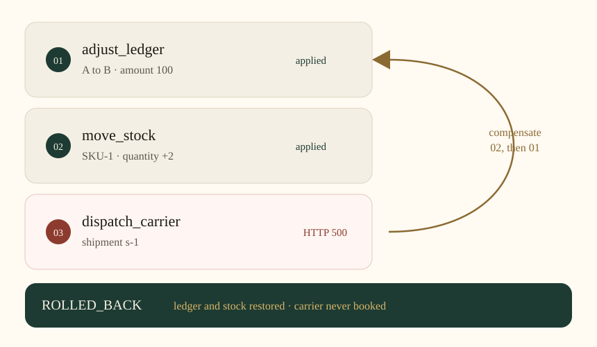

Shadow first
Branchable tools mutate a private branch. API tools return a recorded dry-run example. Production state waits for the policy gate.
Agent Transaction Protocol
MCP 2026-07-28 tells an agent how to call a tool. It does not say what happens when step three fails after step one has already moved money. Reverta is the specification and the coordinator that sit in between.
Why agents need rollback Run the three-step demo Declare a compensatable tool

Branchable tools mutate a private branch. API tools return a recorded dry-run example. Production state waits for the policy gate.
Sending a wire or an email cannot be inverted. Those steps pause, persist, and resume hours later without holding a thread.
Each ledger entry links to the previous SHA-256. Replay walks that chain in a sandbox and refuses to call live endpoints.